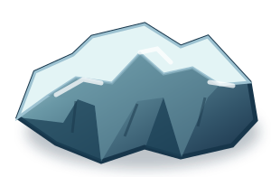
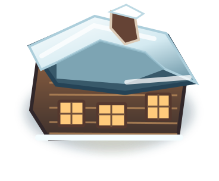
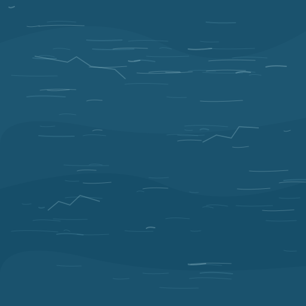

01 · FLARE // single-seat ice-skimmerMaster SVG · heading right · transparency preserved · rotation at runtime
Original overhead sprites and repeatable surfaces for the Northern Loop.





Polar night / deep ice / frost / flare / aurora